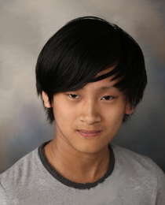

|

I am currently a Junior at NEIU and I am majoring in Computer Science in which my concentration is Information Technology. I transferred here last year after earning my Associate's Degree from Wilbur Wright Community College.
I chose to take Client-Side Web Development because Professor Porps said that this project will be useful in our portfolio to show off our skills to future employers.
After being reintroduced to HTML briefly in my previous Object-Oriented Programming course, I wanted to learn more about how web development works in the modern world.
In all honesty, I'm already having fun just from creating this webpage from scratch.
I enjoy playing video games such as the infamous Dark Souls trilogy which offers a good challenge to those who yearn to persist and adapt.
I like to play other types of games like visual novels, card games, first-person shooters, roguelites, role-playing games, or even beat 'em ups.
I've also been reviewing games as part of a curator group on Steam for the sole purpose of saving your wallets.
I've recently started to draw as another hobby to let my imagination loose or when the internet service goes down from time to time.
My goal in drawing is to finally be able to illustrate a perfectly proportional hand and I continue to strive for it despite my imperfection.
There's a quote that I hold dear to my heart from reading Viktor Frankl's Man's Search for Meaning:
"Everything can be taken from a man but one thing: the last of the human freedoms—
to choose one's attitude in any given set of circumstances, to choose one's own way"
I personally interpret this quote as saying that we ultimately decide how we deal with adversity even at our lowest.
I remind myself of this quote to remain optimistic and I hope that you learned at least something from this webpage of mine.
Five Words That Best Describe Me
- WITTY
- DUTIFUL
- COURTEOUS
- TRUSTWORTHY
- ADVENTUROUS
My Top Ten Favorite Colors
-
BLACK
-
GOLD
-
CRIMSON
- DARK SLATE GRAY
- AQUAMARINE
- CYAN
- SILVER
- DEEP SKY BLUE
- DEEP PINK
- MIDNIGHT BLUE
Five Interesting HTML-Related Terms
- SaaS
- It is an acronym for Software as a Service. This means that the Software is acquired via a subscription instead of being purchased as a product.
Hence, the software is offered as a service that a customer uses with the benefit of continual updates and availability over the Web.
- Semantic Markup
- It refers to the importance of structuring a document in a way in which all of its content is organized meaningfully.
The document is made deliberately to let its target audience understand it with utmost certainty and be able to utilize it with ease.
- Responsive Design
- It is a design approach that seeks to make web pages adapt to the devices that are currently displaying them.
For example, a web page would retain the same resolution on a mobile smartphone as on a desktop.
- URL
- It stands for Uniform Resource Locator which is also known as a "web address" to many web users.
It is used for directing browsers to a specific web page whenever the user types in the valid web address.
- W3C
- The W3C is called the World Wide Web Consortium and it is responsible for setting standards to promote the web's growth.
Thank You For Visiting!
|

![A poorly drawn boy has a gelatinous body and stubby arms. He has a round, black haircut that is shaped like a bowl while he only has a half circle with a black pupil in it for an eye.
Throughout the animation, he says that he thanks the user for visiting the website and he hopes that the user will enjoy their experience.
Near the end of the animation, the doodle is drawn with more details such as having more jagged hair, a thick neck, and an open smile showing rows of teeth.
The final frame transforms the boy into having a red eye and sharp fangs protruding from his mouth while long, jagged branches erupt from his shoulder and hair.](images/thankyou.gif "Thank You For Visiting")